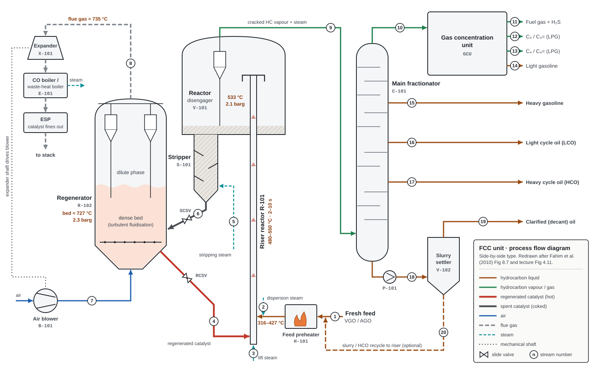

Chapter 03 · schematic diagrams
Block flow and process flow diagrams
The BFD shows the process steps; the PFD adds equipment, tags, 20 numbered streams and operating conditions. Read the stream table beside the PFD, then follow the numbered process description.
3.1How to read the two diagrams
BFD · block flow diagram
- One block per process step
- Arrows are the main streams, labelled with what they carry
- No equipment details. Use it to explain the idea in 30 seconds
PFD · process flow diagram
- Real equipment symbols with tags (R-101, C-101, …)
- Numbered streams, slide valves, steam and air lines
- Key temperatures and pressures on the drawing
HC liquidHC vapourhot regenerated catalystspent catalystairflue gassteam
3.2Block flow diagram

- Feed preheater: fresh feed (plus any recycle) is heated in exchangers or a furnace. Lp. 16
- Riser reactor: hot feed meets hot regenerated catalyst at the riser base; the catalyst's heat vaporises the feed and brings it to reaction temperature. Lpp. 16–17
- Disengager + cyclones: vapour and catalyst are separated mechanically. Lp. 15
- Steam stripper: oil left on the catalyst is removed by steam before regeneration. Lp. 15
- Regenerator: coke is burned with air; air rate controls the CO₂/CO ratio or the regenerator temperature. Lpp. 15–16
- Flue-gas train: cyclones and electrostatic precipitators remove catalyst; CO is burned and energy recovered as steam or power. Lpp. 16–17
- Main fractionator: splits cracked vapour into the product streams. Bp. 211
- Gas concentration unit: recovers fuel gas, propane, butane (LPG) and light gasoline. Bp. 211
3.3Process flow diagram

Stream table
| # | Stream | From → to | Phase | Typical condition / note | Source |
|---|---|---|---|---|---|
| Feed side | |||||
| 1 | Fresh feed (VGO / AGO) | battery limit → H-101 → riser | liquid | boils 316–566 °C; preheated to 316–427 °C | Bpp. 200, 210 |
| 2 | Dispersion steam | utility → feed nozzles | steam | 0.9 wt% of feed | BTable 8.4 |
| 3 | Lift steam | utility → riser base | steam | steam enters with feed at the bottom of the riser | Bp. 210 |
| Catalyst loop | |||||
| 4 | Regenerated catalyst | R-102 → RCSV → riser base | solid (fluidised) | 649–760 °C; 0.01–0.4 wt% residual coke | Bp. 210 Lp. 17 |
| 5 | Stripping steam | utility → S-101 | steam | 0.0213 t per t catalyst | BTable 8.4 |
| 6 | Spent catalyst | S-101 → SCSV → R-102 | solid + coke | 482–538 °C | Bp. 211 |
| 7 | Combustion air | B-101 → R-102 grid | gas | excess air; its rate controls coke burn-off and temperature | Bp. 211 Lp. 17 |
| 8 | Flue gas | R-102 → X-101 → E-101 → ESP → stack | gas + fines | ≈ 735 °C; CO₂, CO, H₂O, excess air | BTable 8.4, p. 211 |
| Hydrocarbon products | |||||
| 9 | Reactor vapour | V-101 → C-101 | vapour | ≈ 533 °C, 2.1 barg; cracked HC + steam | BTable 8.4 |
| 10 | Fractionator overhead | C-101 → GCU | vapour + light liquid | light gases and light gasoline | Bp. 211 |
| 11 | Fuel gas + H₂S | GCU → treating / fuel gas | gas | dry gas 3–5 wt%; H₂S must be removed | BTable 8.2 |
| 12 | C₃ / C₃= (LPG) | GCU → LPG, propylene | LPG | LPG total 8–20 wt%; petrochemical feed | BTable 8.2 |
| 13 | C₄ / C₄= (LPG) | GCU → alkylation / MTBE | LPG | butylenes feed alkylation | Bp. 200 |
| 14 | Light gasoline | GCU → gasoline pool | liquid | part of gasoline 35–60 wt% | BTable 8.2 |
| 15 | Heavy gasoline | C-101 → gasoline pool | liquid | main product | Bp. 211 |
| 16 | Light cycle oil (LCO) | C-101 → diesel HT / fuel diluent | liquid | 12–20 wt%; aromatic, high sulphur | BTable 8.2 |
| 17 | Heavy cycle oil (HCO) | C-101 → fuel oil / recycle | liquid | HCO + slurry 10–15 wt%; very aromatic | BTable 8.2 |
| 18 | Slurry (bottoms) | C-101 → P-101 → V-102 | liquid + fines | heavy aromatics with catalyst fines | Bp. 211 |
| 19 | Clarified (decant) oil | V-102 → fuel oil / solvent | liquid | filtered decant can be an aromatic solvent | Bp. 211 |
| 20 | Slurry / HCO recycle | V-102 → riser | liquid | optional; recycled with HCO | Bp. 211 LFig 4.11 |
3.4Process description, step by step
- Steam and VGO heated to 316–427 °C enter the bottom of the riser, a long vertical pipe. Bp. 210
- Regenerated catalyst at 649–760 °C also enters the riser base (stream 4). Its heat vaporises the feed and brings it to reaction temperature. Bp. 210 Lp. 16
- Catalyst and vapour rise together. The riser is the main reactor; residence time is 2–10 s. Cracking starts at first contact and continues until vapour and catalyst are separated. Bp. 210 Lp. 16
- At the top, vapour goes through cyclones to the fractionator (stream 9); catalyst and some heavy liquid fall into the disengaging zone. Bp. 210
- In the stripper, steam flowing past baffles removes oil from the catalyst (stream 5). Bp. 210
- Spent catalyst at 482–538 °C, carrying coke and adsorbed hydrocarbons, flows to the regenerator (stream 6). Bp. 211 Lp. 17
- Excess air burns the coke (stream 7). The heat of combustion raises the catalyst to 620–845 °C; most of this heat goes back to the feed in the riser. Lp. 17
- Flue gas (CO₂, CO, H₂O, excess air) leaves the top through cyclones. It goes to power recovery, and to a CO boiler if coke is burned only to CO, then to electrostatic precipitators (stream 8). Bp. 211 Lpp. 16–17
- The fractionator makes light gases, heavy gasoline, LCO, HCO and decant slurry. Light gases go to the gas concentration unit for fuel gas, propane, butane, LPG and light gasoline (streams 10–17). Bp. 211
- The bottoms slurry (heavy aromatics + catalyst fines) is settled. Clarified oil leaves as product; the slurry can be recycled to the riser with HCO (streams 18–20). Bp. 211
- The unit is at steady state as long as heat produced in the regenerator = heat consumed in the reactor. Bp. 211
3.5Equipment list
| Tag | Equipment | Function | Fluidisation mode |
|---|---|---|---|
| R-101 | Riser reactor | Where the cracking happens | Pneumatic transport |
| V-101 | Reactor / disengager + cyclones | Separates catalyst from vapour quickly | — |
| S-101 | Steam stripper (baffled) | Recovers oil from spent catalyst, reduces coke load | Bubbling |
| R-102 | Regenerator + cyclones + air grid | Burns coke, reheats catalyst | Turbulent |
| — | Standpipes and lift lines | Move catalyst between vessels | Bubbling (regenerator → riser line); pneumatic (lift line) |
| B-101 | Air blower | Combustion air to the regenerator | — |
| X-101 | Flue-gas expander | Recovers power from hot flue gas, can drive the blower | — |
| E-101 | CO boiler / waste-heat boiler | Burns CO to CO₂ and raises steam | — |
| — | Electrostatic precipitator (ESP) | Removes catalyst fines from flue gas | — |
| C-101 | Main fractionator | Splits reactor vapour into products | — |
| GCU | Gas concentration unit | Fuel gas, C₃, C₄, light gasoline | — |
| V-102 | Slurry settler | Separates catalyst fines from decant oil | — |
Functions: Bpp. 210–212, Table 8.5 Lpp. 15–17. Using the expander to drive the air blower follows the lecture's note that hot gases can "power expansion turbines to compress the regeneration air" Lp. 17.
3.6Quick check
Trace one catalyst particle around the unit.
Regenerator (hot, ~727 °C) → regenerated catalyst standpipe and slide valve → riser base, where it meets feed → up the riser (2–10 s), picking up coke → disengager/cyclones → stripper (steam) → spent catalyst standpipe → regenerator (coke burned) → round again.
Why is steam stripping needed before regeneration?
What is in the fractionator bottoms, and what happens to it?
Heavy aromatic slurry containing catalyst fines. It is settled: clarified (decant) oil leaves as product; the slurry can be recycled to the riser with HCO. Bp. 211